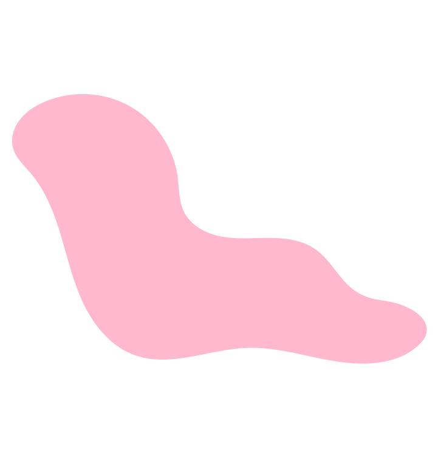
Comprendre votre connexion peau-esprit
Crédits : Michelle Leung BScN; Kevin Li BSc MSPH
Dr. Marlene Dytoc MD PhD FRCPC
Conçu par : Danting Zheng BSc Premier cycle
Traduction : Cécilia Bernier BSc, Michelle Leung BScN
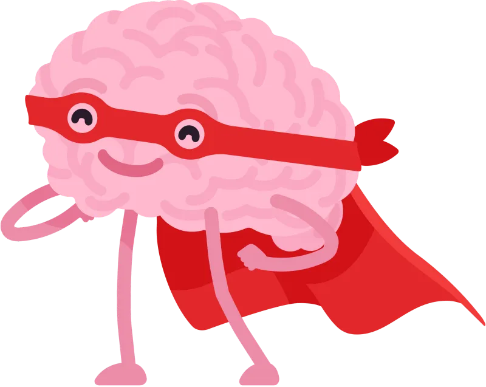
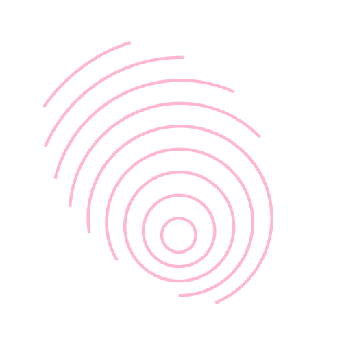
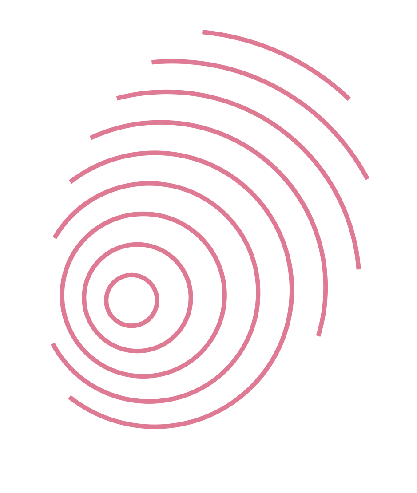
Ce que nous allons explorer ensemble
À la fin de ce module, vous serez en mesure de :
Aperçu du module
- 01Qu’est-ce que l’eczéma (dermatite atopique)? Petit rappel
- 02Le lien peau-esprit : introduction à la psychodermatologie
- 03Mise au point sur le stress et l’eczéma
- 04Comment le stress peut intensifier l’eczéma
- 05Comment est-ce que le stress peut aggraver l’eczéma?
- a) Sur votre vie quotidienne et votre bien-être émotionnel
- 06Faire équipe avec votre dermatologue
- 07Points clés
Notre parcours aujourd’hui!
Qu’est-ce que l’eczéma (dermatite atopique)?
La dermatite atopique (DA) est une maladie inflammatoire chronique de la peau fréquente. Il s’agit d’une maladie génétique complexe influencée par des facteurs environnementaux.
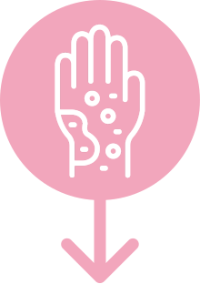
Caractérisée par de fortes démangeaisons et de l’inflammation.
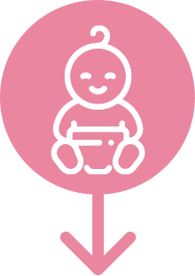
Elle commence généralement durant la petite enfance (début précoce), mais peut aussi parfois apparaître pour la première fois à l’âge adulte (début tardif).
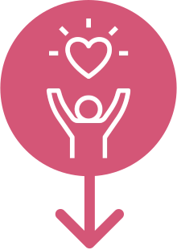
Elle peut avoir des répercussions importantes et négatives sur la qualité de vie.
Le lien peau-esprit : introduction à la psychodermatologie
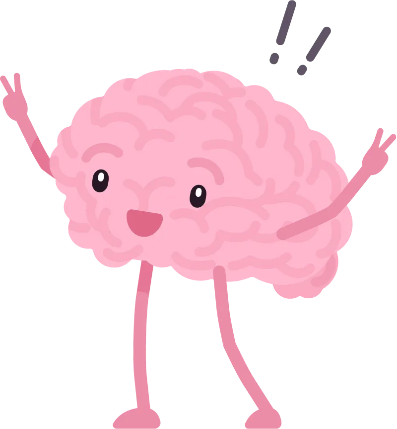
Mise au point sur le stress et l’eczéma
Pour de nombreux adultes, le stress est un facteur déclencheur principal ou un facteur majeur qui aggrave les poussées d’eczéma.
Les sources de stress peuvent être variées : pressions liées au travail, difficultés relationnelles, préoccupations financières, changements importants dans la vie ou encore le fardeau quotidien lié à la gestion d’une maladie chronique.
Comment est-ce que le stress aggrave l’eczéma?
(La science, simplifiée!)
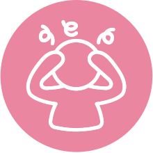
Stress
Votre cerveau active la réponse «fuite ou lutte» et libère des hormones du stress comme le cortisol et l’adrénaline.
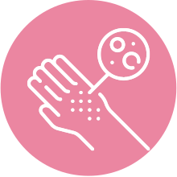
↓ Intégrité de la barrière cutanée
Elles affaiblissent la barrière protectrice de votre peau, la rendant plus vulnérable aux irritants et à la perte d’humidité.
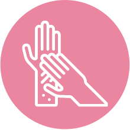
↑ Démangeaisons, grattage et douleur cutanée
Elles stimulent le système immunitaire (inflammation de type allergique), ce qui entraîne plus de démangeaisons, de grattage et de douleur cutanée.
Envie d’en savoir plus?
La science derrière le stress et l’eczéma — pour les curieux.
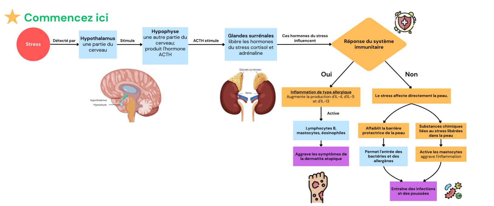
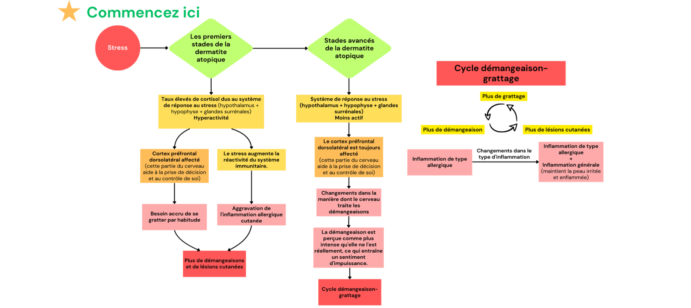
Au-delà de la peau : l’impact de l’eczéma sur votre vie
L’eczéma ne se limite pas à votre peau. Il peut avoir un impact sur :
Qualité du sommeil
Les démangeaisons nocturnes sont fréquentes et entraînent un sommeil perturbé, de la fatigue et une diminution du fonctionnement durant la journée.
Bien-être émotionnel
Vivre avec des démangeaisons chroniques et des changements cutanés visibles peut entraîner de la frustration, de l’anxiété et une humeur dépressive.
Activités quotidiennes et vie sociale
Vous pourriez éviter certaines activités, certains vêtements ou certaines situations sociales en raison de l’inconfort ou de préoccupations liées à l’apparence de votre peau.
Performance à l’école et au travail
L’inconfort, le manque de sommeil et la détresse émotionnelle peuvent nuire à la concentration et à la productivité.
L’eczéma et votre bien-être mental
Il est bien documenté que les adultes atteints d’eczéma sont plus susceptibles de vivre de l’anxiété et/ou de la dépression que ceux qui n’en sont pas atteints.
Ce n’est pas un signe de faiblesse, mais plutôt une conséquence compréhensible de la gestion d’une maladie chronique souvent difficile.
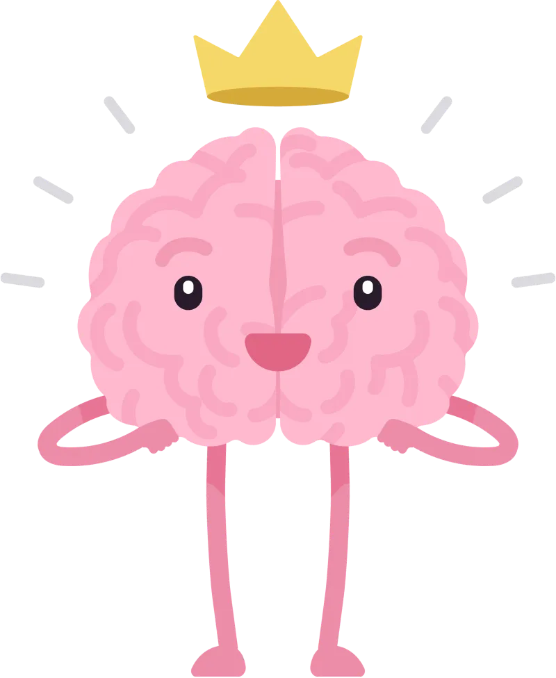
Faire équipe avec votre dermatologue
Votre dermatologue peut être un allié clé dans la gestion des impacts plus larges de votre eczéma. N’hésitez pas à :
- Discuter de l’impact global : Expliquez comment l’eczéma affecte votre sommeil, votre humeur, votre travail et votre vie quotidienne – pas seulement vos symptômes physiques.
- Aborder l’aspect peau-esprit : Demandez quelles stratégies ou ressources vos professionnels de la santé recommandent pour gérer les poussées liées au stress.
- Demander des références : Si vous éprouvez des difficultés sur le plan émotionnel, demandez s’ils peuvent vous orienter vers des professionnels de la santé mentale ou des groupes de soutien qui connaissent bien les affections cutanées chroniques.
- Collaborer à votre plan de traitement : Travaillez ensemble pour trouver un plan qui traite votre peau tout en s’intégrant à votre vie quotidienne.
Prendre le temps d’y réfléchir
Question 1 de 5Prendre le temps d’y réfléchir
Question 2 de 5Prendre le temps d’y réfléchir
Question 3 de 5Prendre le temps d’y réfléchir
Question 4 de 5Prendre le temps d’y réfléchir
Question 5 de 5Petit récapitulatif : les points clés
- › Votre peau et votre esprit sont étroitement liés; le stress et les émotions peuvent avoir une influence importante sur votre eczéma.
- › Reconnaître le stress comme facteur déclencheur est une étape cruciale dans la gestion des poussées.
- › L’impact de l’eczéma va au-delà de la peau et peut toucher le sommeil, l’humeur et la vie quotidienne — ce sont des préoccupations légitimes.
- › Faites équipe avec votre dermatologue pour aborder à la fois les aspects physiques et émotionnels de votre eczéma.
Ce module offre de l’information générale et ne remplace pas les conseils de votre médecin ou de votre dermatologue. En cas de crise ou si vous pensez à vous faire du mal, composez le 911 ou appelez la ligne d’aide en santé mentale de l’AHS au 1-877-303-2642.
Sources
- Bolognia JL, Schaffer JV, Cerroni L. Dermatology. 5th ed. Elsevier; 2021:210.
- Koo J, Lebwohl A. Psychodermatology: the mind and skin connection. Am Fam Physician. 2001;64(11):1873-1879.
- National Eczema Society. Eczema Unmasked Report. 2020.
- Arndt J, Smith N, Tausk F. Stress and atopic dermatitis. Curr Allergy Asthma Rep. 2008;8(4):312-317.
- Nakagawa Y, Yamada S. Alterations in Brain Neural Network and Stress System in Atopic Dermatitis. J Pharmacol Exp Ther. 2023;385(2):78-87.
- Silverberg JI, et al. Patient burden and quality of life in atopic dermatitis in US adults. Ann Allergy Asthma Immunol. 2018;121(3):340-347.
- Ring J, et al. Atopic eczema: burden of disease and individual suffering. J Eur Acad Dermatol Venereol. 2019;33(7):1331-1340.
- Strom MA, et al. Association between atopic dermatitis and ADHD. Br J Dermatol. 2016;175(5):920-929.
- Silverberg JI, et al. Symptoms and diagnosis of anxiety and depression in atopic dermatitis. Br J Dermatol. 2019;181(3):554-565.
- Cheng BT, Silverberg JI. Depression and psychological distress in US adults with atopic dermatitis. Ann Allergy Asthma Immunol. 2019;123(2):179-185.
- Sandhu JK, et al. Association Between Atopic Dermatitis and Suicidality. JAMA Dermatol. 2019;155(2):178-187.
- Christensen RE, Jafferany M. Psychiatric and psychologic aspects of chronic skin diseases. Clin Dermatol. 2023;41(1):75-81.